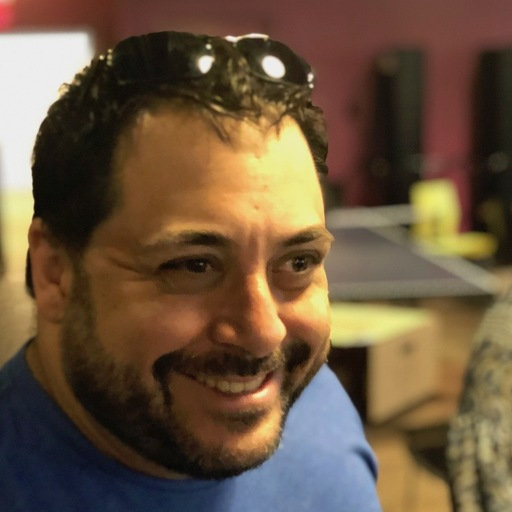
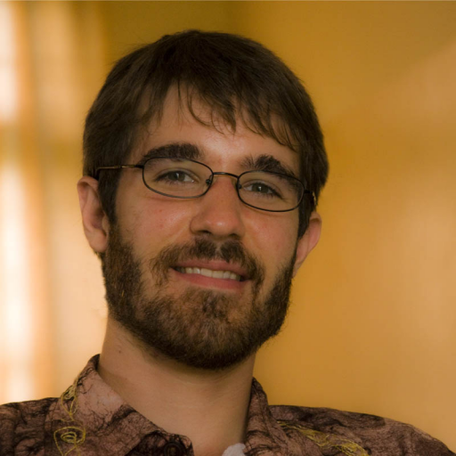
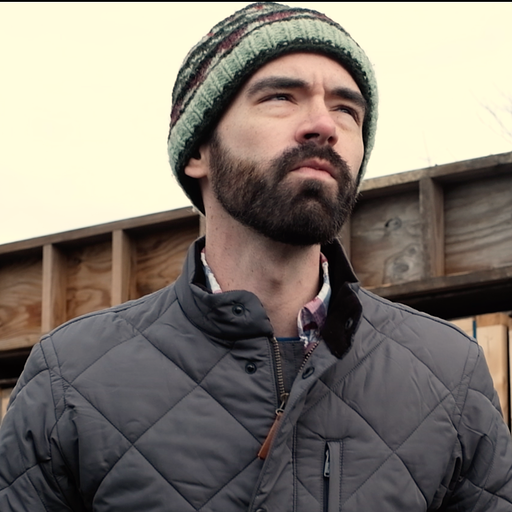

About
Founded in 2024, Civic Tech New England is a 501c3 organization dedicated to building and promoting civic technology in Greater Boston and the New England region. Through community building, network development, education, and project development, we seek to bring together the elements of the local and regional civic tech ecosystem to build a more effective, more understandable, and more engaged government and civil society.
Board of Directors

Harlan Weber
President & Chairman

Will Pfeffer
Vice President
Annie LaCourt
Treasurer
Matt Zagaja
Clerk

Thad Kerosky
Board Member

Brian Sanders
Board Member
Mike Yavorsky
Board Member